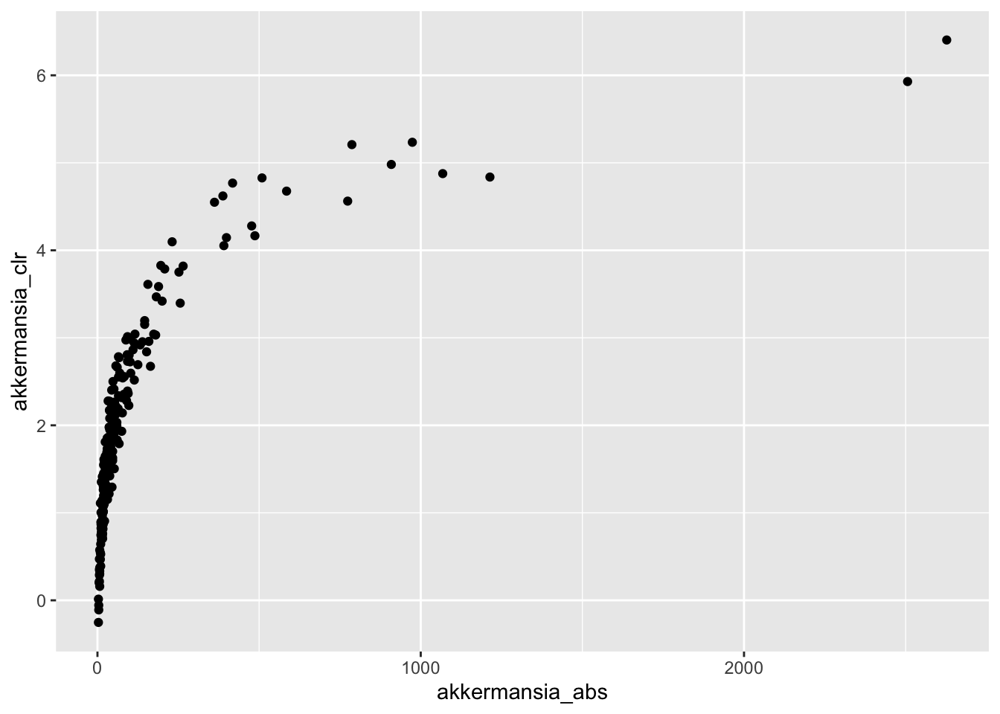

6 Hands-on 1: Introduction to R tools
To create a report, we often want to suppress unneccessary output that would be interesting during coding but not when presenting our results to a colleague. For this we can use chunk options (see here).
6.1 Part II: Phyloseq data structure
- Load example data of the two-week diet swap study between western (USA) and traditional (rural Africa) diets from microbiome R package. The example data sets are already in the phyloseq format. R provides many readily available tools to handle and analyze taxonomic profiling data that is provided in this format.
# before I load the data I load tidyverse. It includes ggplot
# and dplyr which are great for data manipulation and visualization
library(tidyverse)
# load data
library(microbiome)
data(dietswap)
print(dietswap)## phyloseq-class experiment-level object
## otu_table() OTU Table: [ 130 taxa and 222 samples ]
## sample_data() Sample Data: [ 222 samples by 8 sample variables ]
## tax_table() Taxonomy Table: [ 130 taxa by 3 taxonomic ranks ]- Microbal abundances / OTU Table retrieve the microbial (OTU) abundance table from the example data set (phyloseq object). This example data set has abundances at the genus level instead of OTU level. The taxonomic groupings in this 16S data set are only approximations to exact genus-level taxonomic classifications. Tip: microbiome::abundances or phyloseq::otu_table
Note that I use the pipe operator (%>%) below. This operator basically takes the output of the first expression and passes it to the next function. See here for more about the pipe operator (you can skip to Why Use It to get the main idea).
# full tables of abundances
otu.absolute <- abundances(pseq)
# or
#otu.absolute <- otu_table(pseq)
# abundances results in a matrix object
abundances(pseq) %>% class()## [1] "matrix"## [1] "otu_table"
## attr(,"package")
## [1] "phyloseq"| Sample-1 | Sample-2 | Sample-3 | Sample-4 | Sample-5 | Sample-6 | Sample-7 | Sample-8 | Sample-9 | Sample-10 | |
|---|---|---|---|---|---|---|---|---|---|---|
| Actinomycetaceae | 0 | 1 | 0 | 1 | 0 | 0 | 0 | 0 | 0 | 0 |
| Aerococcus | 0 | 0 | 0 | 0 | 0 | 0 | 0 | 0 | 0 | 0 |
| Aeromonas | 0 | 0 | 0 | 0 | 0 | 0 | 0 | 0 | 0 | 0 |
| Akkermansia | 18 | 97 | 67 | 256 | 21 | 16 | 26 | 30 | 19 | 125 |
| Alcaligenes faecalis et rel. | 1 | 2 | 3 | 2 | 2 | 2 | 2 | 2 | 2 | 7 |
- OTU tables Retrieve the OTU table and investigate:
- How many different samples and genus-level groups this phyloseq object has?
- What is the maximum abundance of Akkermansia in this data set? Tips: see data operations in the microbiome tutorial
## [1] 130 222## [1] 2627- Draw a histogram of library sizes (total number of reads per sample). You can use the readcount function, or count the sum of reads per sample by using the colSums command applied on the otu table abundances. The example data set is from phylogenetic microarray, hence the numbers correspond to light intensity on the array rather than sequencing reads but the interpretation is analogous and we can ignore this detail for demonstration purposes. The key idea is that different samples may have different bacterial load. Check Vandeputte et al. 2017 for further discussion on the differences between absolute and relative quantification of microbial abundances.

- Taxonomy table Retrieve the taxonomy table and print out the first few lines of it with the R command head(). Investigate how many different phylum-level groups this phyloseq object has? Tips: phyloseq::tax_table and unique.
| Phylum | Family | Genus | |
|---|---|---|---|
| Actinomycetaceae | Actinobacteria | Actinobacteria | Actinomycetaceae |
| Aerococcus | Firmicutes | Bacilli | Aerococcus |
| Aeromonas | Proteobacteria | Proteobacteria | Aeromonas |
| Akkermansia | Verrucomicrobia | Verrucomicrobia | Akkermansia |
| Alcaligenes faecalis et rel. | Proteobacteria | Proteobacteria | Alcaligenes faecalis et rel. |
| Allistipes et rel. | Bacteroidetes | Bacteroidetes | Allistipes et rel. |
## [1] 8# option 2
pseq %>%
tax_table() %>%
as.data.frame() %>% # we convert the matrix to a data frame for the next step
distinct(Phylum) %>% # select only unique Phyla
dim() # count## [1] 8 1- Sample metadata Retrieve sample metadata. How many unique subjects this data set has? What is the male/female ratio? Draw a bar plot of subject BMI-group. Tips: microbiome::meta
# option 1 (results in dataframe)
pseq.meta <- meta(pseq)
# option 2
# pseq.meta <- sample_data(pseq)
# number of unique subjects
pseq.meta$subject %>%
unique() %>%
length()## [1] 38# male/female ratio (of samples)
sex.count <- pseq.meta %>%
select(sex) %>%
group_by(sex) %>%
summarise(n = n())
# take a look at the table
kable(sex.count)| sex | n |
|---|---|
| female | 102 |
| male | 120 |
## n
## 1 1.176471# male/female ratio (of subjects)
sex.count <- pseq.meta %>%
filter(timepoint == 1) %>% # to only count each subject once
group_by(sex, subject) %>%
summarise(n = n())
dim(sex.count[sex.count$sex == "male", ])[1] / dim(sex.count[sex.count$sex == "female", ])[1]## [1] 1.2352946.2 Part III: Data manipulation and exploration
- Subsetting Pick a subset of the phyloseq object including only male and obese individuals. How many there are? Tips: subset_samples
pseq.obe <- subset_samples(pseq, bmi_group == "obese" & sex == "male")
meta(pseq.obe) %>% dim() # there are 30 samples## [1] 30 8## [1] 5 8- Transformations The phyloseq data has absolute abundances. Use the microbiome::transform command to convert these into relative abundances. Compare Akkermansia abundance using the example data before and after the compositionality transformation (with a cross-plot, for instance). Finally, compare the results to CLR- transformed data (see e.g. Gloor et al. 2017)
# relative abundance
pseq.rel <- microbiome::transform(pseq, transform = "compositional")
# clr transformed abudnances
pseq.clr <- microbiome::transform(pseq, transform = "clr")
# now extract akkermansia from each object
akkermansia.absolute <- otu.absolute %>%
t() %>%
as.data.frame() %>%
rownames_to_column("sample_id") %>%
select(sample_id, akkermansia_abs = Akkermansia)
akkermansia.relative <- abundances(pseq.rel) %>%
t() %>%
as.data.frame() %>%
rownames_to_column("sample_id") %>%
select(sample_id, akkermansia_rel = Akkermansia)
akkermansia.clr <- abundances(pseq.clr) %>%
t() %>%
as.data.frame() %>%
rownames_to_column("sample_id") %>%
select(sample_id, akkermansia_clr = Akkermansia)
# for the crossplot I combine the abundances into one dataframe
akkermansia <- left_join(
akkermansia.absolute,
akkermansia.relative,
by = "sample_id") %>%
left_join(akkermansia.clr, by = "sample_id")
# absolute versus relative
ggplot(akkermansia, aes(akkermansia_abs, akkermansia_rel)) +
geom_point()
- Visual exploration Visualize the population distribution of abundances for the following taxa: Akkermansia, Dialister, Gemella. Do the same for CLR-transformed abundances. Tip: microbiome::plot_density / microbiome::transform
# option 1: use the function individually for each genus, e.g.:
plot_density(pseq, variable = "Akkermansia")
# option 2: use the map function over a vector:
otus <- c("Akkermansia", "Dialister", "Gemella")
map(otus, ~plot_density(pseq, variable = .x))## [[1]]
##
## [[2]]##
## [[3]]## [[1]]##
## [[2]]##
## [[3]]- Experiment with other phyloseq data manipulation tools